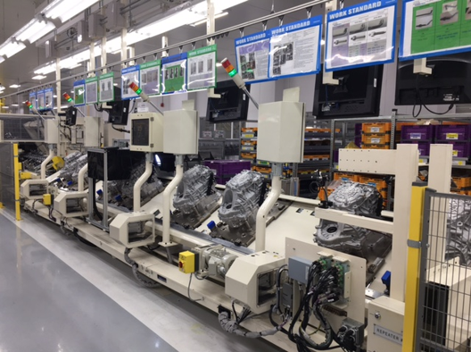

<div class="tab-wrapper">

      <!-- 이미지 -->
    <div class="tab-content">

        
        

    </div>

</div>

<style>

/* 전체 */
.tab-wrapper{
    text-align:center;
    padding-top:90px;
}

/* 버튼 영역 */
.tab-menu{
    display:flex;
    justify-content:center;
    gap:12px;
    margin-bottom:40px;
}

/* 버튼 */
.tab-btn{
    padding:10px 18px;
    border:none;
    background:#eeeeee;
    cursor:pointer;
    border-radius:6px;
    transition:0.3s;
    font-weight:500;
}

/* 활성 버튼 */
.tab-btn.active{
    background:#9e9e9e;
    color:#fff;
}

/* hover */
.tab-btn:hover{
    background:#d6d6d6;
}

/* 이미지 영역 */
.tab-content{
    display:flex;
    justify-content:center;
}

/* 🔥 핵심: 이미지 애니메이션 */
.tab-img{
    display:none;
    width:85%;
    max-width:1200px;
    margin:0 auto;

    opacity:0;
    transform: scale(0.95);
    transition: opacity 0.6s ease, transform 0.6s ease;
}

/* 활성 이미지 */
.tab-img.show{
    display:block;
    opacity:1;
    transform: scale(1);
}

/* 모바일 */
@media (max-width:768px){

    .tab-wrapper{
        padding-top:60px;
    }

    .tab-img{
        width:95%;
    }
}

</style>

<script>

function showTab(id, btn){

    // 이미지 변경
    document.querySelectorAll('.tab-img').forEach(img=>{
        img.classList.remove('show');
    });

    document.getElementById(id).classList.add('show');

    // 버튼 active
    document.querySelectorAll('.tab-btn').forEach(b=>{
        b.classList.remove('active');
    });

    btn.classList.add('active');
}

</script>
<a href="index.html" style="
    position:fixed;
    top:20px;
    left:50px;
 transform:translateX(-50%);
    width:42px;
    height:42px;

    background:#fff;
    border-radius:50%;
    box-shadow:0 4px 12px rgba(0,0,0,0.12);

    display:flex;
    align-items:center;
    justify-content:center;

    text-decoration:none;
    font-size:16px;
    color:#333;

    z-index:999;
    transition:0.2s;
">
    ⌂
</a>

<!DOCTYPE html>
<html lang="ko">
<head>
  <meta charset="UTF-8">
  <title>스크롤 애니메이션 예시</title>
  
  <style>
       
    /* 1. 처음에 숨겨둘 상태 (기본 설정) */
    .fade-in-image {
      opacity: 0;                    /* 완전히 투명하게 리셋 */
      transform: translateY(50px);   /* 원래 위치보다 50px 아래에 배치 */
      transition: all 1s ease-out;   /* 1초 동안 부드럽게 변하는 효과 */
      display: block;
      margin: 50px auto;             /* 화면 가운데 정렬 */
    }

    /* 2. 스크롤을 내렸을 때 나타날 상태 */
    .fade-in-image.visible {
      opacity: 1;                    /* 선명하게 보이기 */
      transform: translateY(0);      /* 원래 제자리로 올라오기 */
    }
  </style>
</head>
<body>


  
  
  <script>
    window.addEventListener('scroll', function() {
      const image = document.getElementById('scrollImg');
      const imagePosition = image.getBoundingClientRect().top;
      const screenPosition = window.innerHeight / 1.2; // 화면의 80% 지점에 도달했을 때 실행

      // 이미지가 화면 안에 들어오면 'visible' 클래스를 추가해 효과를 켭니다
      if (imagePosition < screenPosition) {
        image.classList.add('visible');
      }
    });
  </script>

</body>
</html>


<!DOCTYPE html>
<html lang="ko">
<head>
    <meta charset="UTF-8">
    <title>가로 슬라이더</title>
    <style>
        /* [1] 전체 슬라이더 감싸는 틀 (화살표와 사진을 한 줄로 정렬) */
        .slider-wrapper {
            display: flex;
            align-items: center;
            justify-content: center;
            position: relative;
            width: 100%;
            max-width: 1800px; /* 전체 슬라이더 최대 너비 */
            margin: 50px auto;
        }

        /* [2] 슬라이더 창 (보여줄 구역 크기 설정 및 넘치는 사진 숨기기) */
        .slider-container {
            overflow: hidden; /* ★중요: 이 영역 밖으로 밀려난 사진들은 숨김 */
            width: 100%;
            position: relative;
            padding: 40px 0;  
        }

        /* [3] 사진들이 일렬로 배치되는 실제 트랙 */
        .slider-track {
            display: flex; /* ★중요: 밑으로 나열되던 사진들을 가로로 쭉 나열 */
            transition: transform 0.4s ease-out; /* 이동할 때 스르륵 움직이는 효과 */
            will-change: transform;
        }

        /* [4] 개별 사진 아이템 크기 및 간격 설정 */
        .slider-item {
            flex: 0 0 600px; /* 사진 한 장의 가로 크기 */
            padding: 0 10px;  /* 사진 좌우 간격 */
            box-sizing: border-box;
            opacity: 0.4;     /* 기본적으로 선택 안 된 사진은 흐리게 */
            transform: scale(0.75);   /* 양 옆 사진 작게 */
            transition: all 0.4s ease;
        }

        /* 현재 중앙에 선택된 사진만 선명하게 강조 */
        .slider-item.active {
            opacity: 1; 
             transform: scale(1);      /* 가운데 사진 원래 크기 */  
        }

        /* 이미지 원본 비율 유지 스타일 */
        .slider-item img {
            width: 100%;
            height: 450px;
            object-fit: cover;
            display: block;
            border-radius: 8px; /* 사진 모서리 살짝 둥글게 */
        }

        /* [5] 좌우 이동 화살표 버튼 스타일 */
        .slider-btn {
            background: rgba(0, 0, 0, 0.5);
            color: white;
            border: none;
            padding: 15px 20px;
            font-size: 20px;
            cursor: pointer;
            z-index: 10;
            border-radius: 50%;
            margin: 0 15px;
            transition: background 0.3s;
        }

        .slider-btn:hover {
            background: rgba(0, 0, 0, 0.8);
        }
    </style>
</head>
<body>

<div class="slider-wrapper">

    <button class="slider-btn btn-left" onclick="moveSlider(-1)">&#10094;</button>

    <div class="slider-container">
        <div class="slider-track" id="sliderTrack">
            <div class="slider-item"></div>
            <div class="slider-item"></div>
            <div class="slider-item"></div>
            <div class="slider-item"></div>
            <div class="slider-item"></div>
            <div class="slider-item"></div>
            <div class="slider-item"></div>
            <div class="slider-item"></div>
            <div class="slider-item"></div>
        </div>
    </div>

    <button class="slider-btn btn-right" onclick="moveSlider(1)">&#10095;</button>

</div>

<script>
    let currentIndex = 0;
    const track = document.getElementById('sliderTrack');
    const slides = track.children;
    const totalSlides = slides.length;

    function updateSlider() {
        // 모든 슬라이더에서 active 클래스 제거
        for (let i = 0; i < totalSlides; i++) {
            slides[i].classList.remove('active');
        }
        // 현재 선택된 슬라이더에만 active 클래스 추가 (선명해짐)
        slides[currentIndex].classList.add('active');

        // 가운데 정렬을 위한 계산식 구동
        const containerWidth = document.querySelector('.slider-container').offsetWidth;
        const slideWidth = slides[0].offsetWidth;
        const offset = (containerWidth / 2) - (slideWidth / 2) - (currentIndex * slideWidth);
        
        // 실제로 트랙을 X축 방향으로 밀어줍니다
        track.style.transform = `translateX(${offset}px)`;
    }

    function moveSlider(direction) {
        currentIndex += direction;
        // 끝까지 가면 처음으로, 처음에서 뒤로 가면 끝으로 순환 고리
        if (currentIndex >= totalSlides) {
            currentIndex = 0;
        } else if (currentIndex < 0) {
            currentIndex = totalSlides - 1;
        }
        updateSlider();
    }

    // 화면이 켜지거나 브라우저 크기가 바뀔 때 정렬 맞추기
    window.addEventListener('load', updateSlider);
    window.addEventListener('resize', updateSlider);
</script>

</body>
</html>
